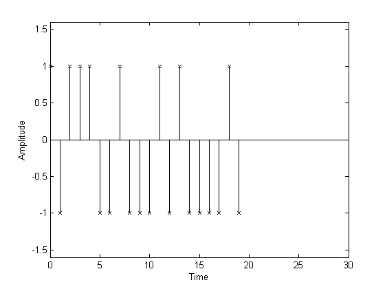
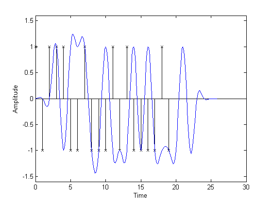
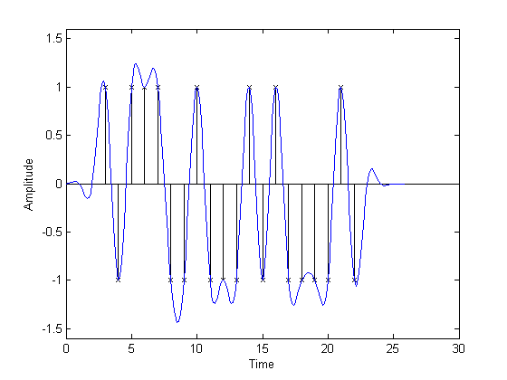
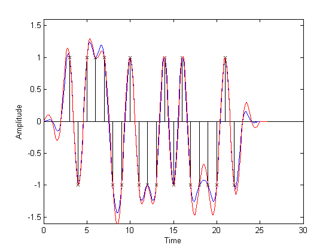
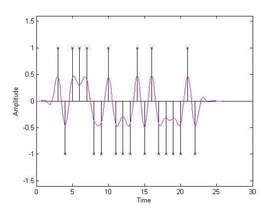
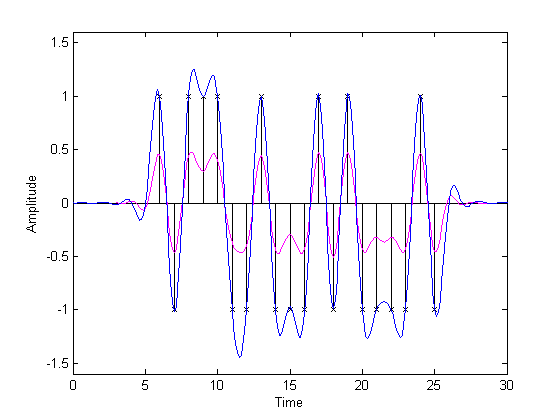

Raised Cosine Filtering
This demonstration uses the Communications Toolbox functions, RCOSINE and RCOSFLT, to demonstrate the intersymbol interference rejection capability of the raised cosine filter. It demonstrates how to use RCOSINE and RCOSFLT, how the raised cosine filter controls intersymbol interference, and how to split the raised cosine filtering between transmitter and receiver.
This data sequence represents a digital sequence that will be upsampled by zero-padding before filtering. Raised cosine filters will be used to shape the waveform without introducing intersymbol interference (ISI).
% Parameters. Delay = 3; DataL = 20; R = .5; Fs = 8; Fd = 1; PropD = 0; % Generate random data. x = randsrc(DataL, 1, [], 1245); % at time 0, 1/Fd, 2/Fd, ... tx = [PropD: PropD + DataL - 1] ./ Fd; % Plot data. stem(tx, x, 'kx'); % Set axes and labels. axis([0 30 -1.6 1.6]); xlabel('Time'); ylabel('Amplitude');
RCOSFLT is used to upsample and filter the data stream using the filter designed by RCOSINE. The plot compares the digital data and the upsampled, filtered signal. It is difficult to compare the two signals because the peak response of the filter is delayed by the group delay of the filter (order/(2*Fs)).
% Design filter. [yf, tf] = rcosine(Fd, Fs, 'fir', R, Delay); % Upsample and filter. [yo, to] = rcosflt(x, Fd, Fs, 'filter', yf); % Plot data. stem(tx, x, 'kx'); hold on; % Plot filtered data. plot(to, yo, 'b-'); hold off; % Set axes and labels. axis([0 30 -1.6 1.6]); xlabel('Time'); ylabel('Amplitude');
This step compensates for the raised cosine filter group delay by delaying the input signal. Now it is easy to see how the raised cosine filter upsamples and filters the signal. The filtered signal is identical to the delayed input signal at the input sample times. This demonstrates the raised cosine filter capability to band-limit the signal while avoiding ISI.
% Correct for propagation delay PropD = Delay * Fd; % at time 0, 1/Fd, 2/Fd, ... tx = [PropD: PropD + DataL - 1] ./ Fd; % Plot data. stem(tx, x, 'kx'); hold on; % Plot filtered data. plot(to, yo, 'b-'); hold off; % Set axes and labels. axis([0 30 -1.6 1.6]); xlabel('Time'); ylabel('Amplitude');
This step demonstrates the effect that changing the rolloff factor from .5 (blue curve) to .2 (red curve) has on the resulting filtered output. The lower value for rolloff causes the filter to have a narrower transition band causing the filtered signal overshoot to be greater for the red curve than for the blue curve.
% Design filter. [yg, tg] = rcosine(Fd, Fs, 'fir', .2, Delay); % Filter data. [yo1, to1] = rcosflt(x, Fd, Fs, 'normal/fir/filter',yg); % Plot data. stem(tx, x, 'kx'); hold on; % Plot filtered data. plot(to, yo, 'b-',to1, yo1, 'r-'); hold off; % Set axes and labels. axis([0 30 -1.6 1.6]); xlabel('Time'); ylabel('Amplitude');
A typical use of raised cosine filtering is to split the filtering between transmitter and receiver. The data stream is upsampled and filtered at the transmitter using the square-root raised cosine filter. This plot shows the transmitted signal when filtered using the square-root raised cosine filter. The "fir/sqrt" switch was used with RCOSINE to generate the square-root raised cosine filter.
% Design square root filter. [ys, ts] = rcosine(Fd, Fs, 'fir/sqrt', R, Delay); % Filter at the transmitter. [yc, tc] = rcosflt(x, Fd, Fs, 'filter', ys); % Plot data. stem(tx, x, 'kx'); hold on; % Plot filtered data. plot(tc, yc, 'm-'); hold off; % Set axes and labels. axis([0 30 -1.6 1.6]); xlabel('Time'); ylabel('Amplitude');
The transmitted signal (magenta curve) is then filtered, but not upsampled, at the receiver, using the same square-root raised cosine filter, resulting in a signal depicted by the blue curve at the receiver. The resulting signal is virtually identical to the signal filtered using a single raised cosine filter. The "Fs" was used to filter without upsampling.
% Filter at the receiver. [yr, tr] = rcosflt(yc, Fd, Fs, 'filter/Fs', ys); % Adjust for propagation delay. tcc = tc + Delay .* Fd; txx = tx + Delay .* Fd; % Plot data. stem(txx, x, 'kx'); hold on; % Plot filtered data. plot(tcc, yc, 'm-',tr, yr, 'b-'); hold off; % Set axes and labels. axis([0 30 -1.6 1.6]); xlabel('Time'); ylabel('Amplitude');
This step demonstrates a quicker way to filter data using RCOSFLT. When RCOSFLT is used without the "filter" type switch, it designs a filter and uses it to filter the input data. This step creates the same plot as before but designs the raised cosine filter and generates the filtered stream in one command.
% Design and filter. [yo2, to2] = rcosflt(x, Fd, Fs, 'normal/fir', R, Delay); % Plot data. stem(tx, x, 'kx'); hold on; % Plot filtered data. plot(to2, yo2, 'b-'); hold off; % Set axes and labels. axis([0 30 -1.6 1.6]); xlabel('Time'); ylabel('Amplitude');
Copyright 1996-2003 The MathWorks, Inc.